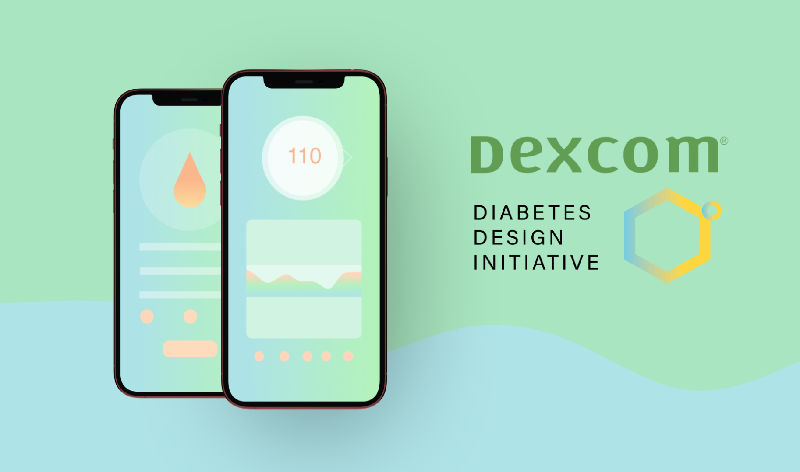

Dexcom
Role
Product Design InternTeam Members
Junhee Chung, Staci Lin, Fiona WongTimeline
January 2020 — August 2020Overview
I worked with Dexcom as a student Product Designer for 3 different design sprints. This portfolio entry recaps the last 10-week sprint that focused on redesigning the Dexcom Follow app.
*This project is under NDA. Sensitive details and assets have been omitted or modified. Contact me for questions regarding my experience.
Background
Who is Dexcom?
San Diego-based company that develops CGMs, for PWDs (persons with diabetes) along with a suite of connected mobile apps.

What is a CGM?
Short for “continuous glucose monitor”, it's a wearable medical device that provides real-time updates of blood glucose levels to Dexcom apps.
What is the Follow app?
Dexcom Follow allows family, friends, or followers of PWDs to view & monitor the sharer's real-time CGM updates. For many users, it's a way for parents to remotely check on their children from wherever to check on their glucose levels.
Problem
The Dexcom Follow app is essential for CGM users and their families. Many depend on it to monitor and assist their loved ones in managing their diabetes effectively.
Diabetes is stressful enough. Follow shouldn't add to that, but instead, be a supportive tool for users in their crusade to manage everchanging glucose levels.
Prompted by Dexcom stakeholders with the above "How might we" statement, our team embarked on a sprint to explore and design solutions for enhancing the Follow app's functionality and user experience.
Solution
💡 Empower users with more opportunities to personalize their Follow experience.
Our team designed solutions based on 3 major opportunity points, found from our research, that addressed user pain points and implemented functionality that would assist them in diabetes management.
✨ Utilizing Past Data
Users can view & interact with previous data, to better understand and prevent low/high glucose levels.✨ In-Depth Data & Stats
Users are more in the loop with their loved ones' health with more data to mitigate uncertainty and anxiety.✨ More Customization
Give more control to users as to how & when they receive important alert notifications.Research
To approach a task as large as a complete overhaul, we researched to discover what Follow could improve upon.
User Reviews + Social Media Discussion
Our group scraped recent reviews of Follow from the app store to gain a better understanding of what users were unhappy with. The 50 most recent reviews were evaluated by our group which revealed that 94% of the reviews were negative.
Additionally, we joined T1 diabetes/Dexcom user communities on social media such as Facebook and Reddit to discover what pain points and aspects of the Follow app were being brought up in user discussions.
From our review and social media analysis, we noted recurring points from both sources:
- Users were frustrated with how little CGM data was available to them
- Many noted how Follow was missing data and features that other apps had
- There was a lack of troubleshooting support when faced with app issues
- Most of the users wanted increased control over notifications, especially given the possibility of missing life-threatening alerts
Competitive Analysis
To get a better sense of what competitors were doing in the same space, and why users may prefer them over Follow, we conducted a competitive analysis of several competitors with their own CGM ecosystem and those that used Dexcom CGMs' data.
A major takeaway, also seen from reviews, was that Follow was lacking standard features such as advanced data & customization of alerts, that others had.
For Follow to be more competitive and meet user expectations, these gaps need to be addressed.
In-depth Interviews with 20 families
We reached out and conducted interviews with 20 families who were actively using Follow in their daily lives to monitor their children
In addition to questioning, we had parents walk through their typical user journey with the app to discover pain points and identify where Follow had caused them frustration.
The interviews confirmed the issues noted in user reviews were almost universal among users and revealed other pain points that were brought to light during our users' walkthroughs.
Synthesize
We synthesized research findings, developing personas and affinity diagrams, to help us identify 3 major design opportunities.
Personas
Our team developed personas based on our research findings, which included interviews with 20 active users of the Dexcom Follow app and general sentiments from app review scraping.
By using personas, we could discover commonalities that Follower users had regarding their pain points and needs.
Affinity Diagrams
We developed affinity diagrams by first going through our interviews and noting key insights from user wants and pain points. These points were then categorized based on specific features, reasons for frustration, and priority with our limited timeline.
These diagrams helped us break down the dense amount of information from our research into clear categories, making it easier to identify any trends.


Insight → Opportunity Points
Analyzing the insights from our research, our team recognized that there were prevalent, recurring issues regarding certain features of the app across all users.
We pin-pointed 3 major opportunities we wanted to focus on to alleviate a majority of user frustration with Follow within this sprint.
Problem #1
Users weren't able to access CGM graph data beyond the past 24 hours.
Why is this important?
The ability to view past data & understand trends/causes of critical alerts is essential in diabetes management.
✨ Opportunity Point
Improve graph readability and include historic data for users’ future reference.
Problem #2
Users weren't able to access CGM graph data beyond the past 24 hours.
Why is this important?
The ability to view past data & understand trends/causes of critical alerts is essential in diabetes management.
✨ Opportunity Point
Improve graph readability and include historic data for users’ future reference.
Problem #3
Users weren't able to access CGM graph data beyond the past 24 hours.
Why is this important?
The ability to view past data & understand trends/causes of critical alerts is essential in diabetes management.
✨ Opportunity Point
Improve graph readability and include historic data for users’ future reference.
Updating Stakeholders
We wanted to ensure everyone was informed before proceeding. Our team presented research findings, key insights, and opportunities to Dexcom stakeholders before iterating designs.
Stakeholders provided valuable feedback and validated that our proposals were in line with the business goals for the sprint.
Project managers & mentors approved the 3 opportunities we wanted to focus on for the sprint.
Design
We began iterating solutions to address the opportunities identified from our research.
Since this was during the height of the pandemic, our team conducted everything remotely. The primary tools used were Figma, Miro, & digital sketching to facilitate maximum collaboration.
We began our ideation process with early sketches, using Crazy 8's as an exercise. The goal was to explore all the possible solutions we could implement into the Follow app. The team then voted on aspects of each sketch that we wanted to further refine into wireframes and subsequent prototypes.
❗ Per my NDA. Final prototypes, detailed wireframes & testing results are blurred.
Early Sketches & User Flows
Wireframes
Figma Prototyping
Testing with Users
Throughout the sprint, we conducted usability testing sessions over Zoom with clickable Figma prototypes. We had users complete routine tasks and answer research questions, to evaluate our designs.
We continually tested with users as we iterated, using feedback to progressively update prototypes and inform design changes.
In addition to constantly testing with users, mentors were kept in the loop with weekly presentations to update them on why certain design changes were made or validated, along with accompanying findings from tests.
Deliverables
Dexcom stakeholders & Director of Design approved our final prototypes!
We presented the final prototypes to the Dexcom stakeholders and mentors and received resoundingly positive approval. Our work served as a foundational design and research handoff for future implementations of the Follow app.
"We've heard over and over again in our nano-research was people saying that their experience on the Follow app goes in and out of the space we want to keep them in.
Your [redacted] feature lets users have all the information they need and streamlines all the communication within the app.
I really liked that addition. It sounds like you guys are really listening to our users.
Designs were very solid, loved the outcome!"
Reflection
After three wonderful design sprints with the Diabetes Design Initiative and Dexcom, I have learned a great deal about working with industry professionals, remote research/testing, and presenting my work to stakeholders.
I am grateful for the opportunity I had to develop further as a designer and get to know families with diabetes, who have taught me so much about resilience. It was a truly rewarding experience watching them light up seeing our prototypes and noting how they finally felt heard!
Takeaways
Thank you to all of my fellow DDI teammates, mentors, and Dexcom for so many educational opportunities to grow more as a researcher and designer!
Check out more projects here!
Home